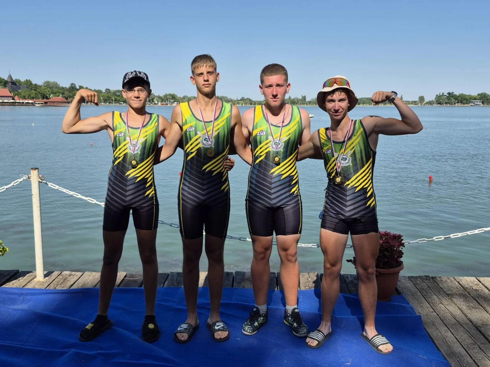
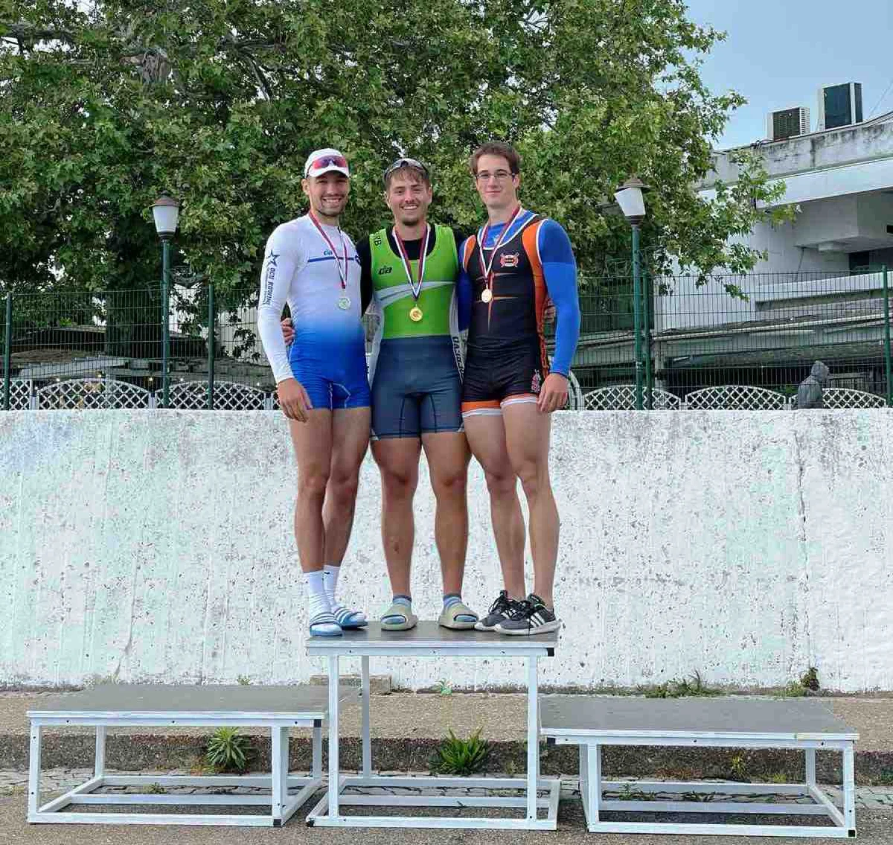
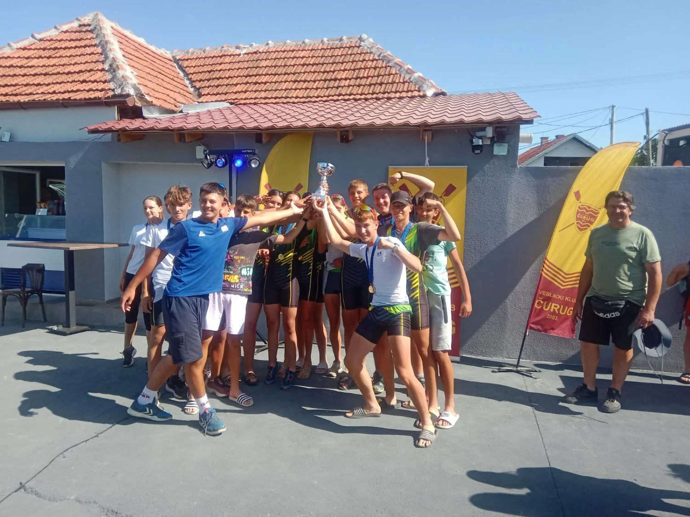
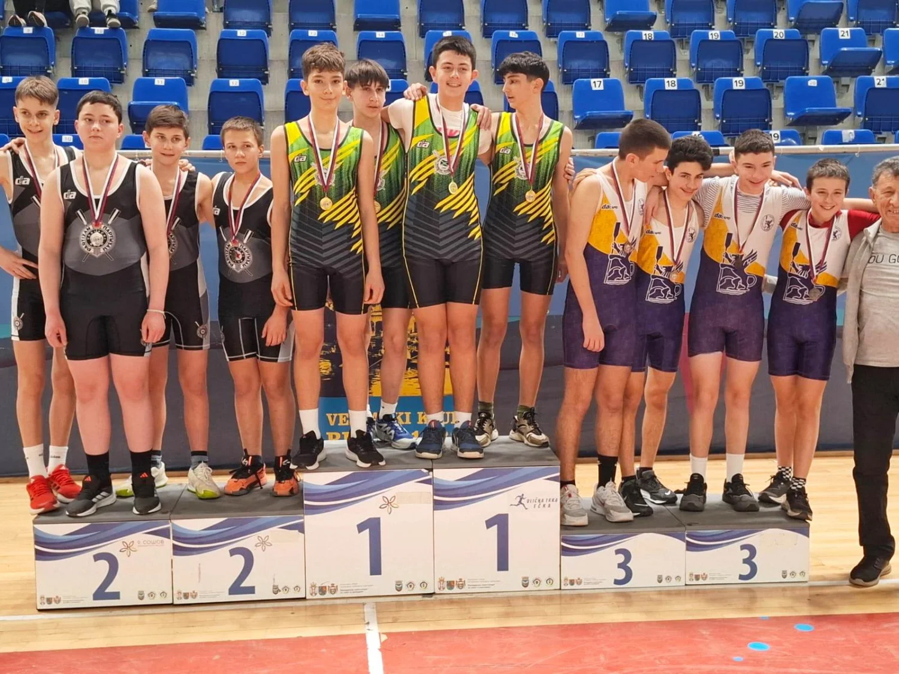

PALIĆKO TAKMIČENJE
I ove godine na Palićkom jezeru održana je tradicionalna regata Vojvodina Open,
63 po redu na kojoj su nastupili domaći i klubovi iz inostranstva. Smederevski veslači su bili raspoloženi za nadmetanje i sa Palića u Smederevo su se vratili sa devet medalja.
Prvog dana takmičenja, u subotu, osvojene su dve zlatne i po jedna srebrna i bronzana medalja. Tara Božanović u juniorskom skifu za žene i kadetski četverac bez kormilara u sastavu Nikola Miličević,
Lazar Lazarević, Andreja Jovanović i Dušan Đokić osvojili su najsjajnija odličja. Pionirski četverac skul (Andrija Nedeljković, Vidak Drašković, Vukašin Živanović i Vasil Božanović okitio se srebrnom medaljom,
a bronza je pripala pionirkama u dubl skulu u sastavu Minja i Dunja Savić.

ŠEST ZLATNIH MEDALJA SA DRUGE REGATE KUPA SRBIJE
Na drugoj regati Kupa Srbije, održanoj na Adi Ciganliji, veslači Smedereva osvojili su šest zlatnih medalja.
Smederevci su bili ubedljivi u skifu. Kod mlađih seniora slavio je Lazar Živanović, Đorđe Rapajić bio je najbolji kod juniora,
a Tara Božanović trijumfovala je u konkurenciji juniorki.Kadetski četverac bez kormilara u sastavu Lazar Lazarević, Andreja Jovanović,
Dušan Đokić i Nikola Milićević bio je najbolji u svojoj kategoriji, a zlatu iz četverca, Nikola Milićević i dušan Đokić dodali su najsjajnije odličje i
u disciplini dvojac bez kormilara. Poslednje zlatno odličje pripalo je pionirskom četvercu sa kormilarom u kome su veslali Andrija Nedeljković, Vidak Drašković,
Vukašin Živanović, Vasil Božanović i kormilarka Dunja Petrović.Zapažen rezultat ostvarile su Minja i Dunja Savić u pionirskom dubl skulu plasmanom na peto mesto,
dok je pionirski četverac skul (Ognjen Paunović, Mateja Martić, Sergej Cvetković i Filip Vukelić) zauzeo odlično četvrto mesto. U skifu za kadetkinje Nadežda Radulović
je takođe bila ćetvrta. Naredna regata koja očekuje veslače Smedereva biće treća regata Kupa Srbije početkom juna.

NAJBOLJI U ČURUGU
Veslači Smedereva ostvarili su odličan rezultat na četvrtom kolu Omladinske lige Srbije održanom u Čurugu. Po završetku takmičenja njima je,
pored velikog broja medalja, pripao i pehar namenjen najboljem klubu na ovoj regati. Smederevci su se iz Čuruga vratili sa 5 zlatnih, dve srebrne i jednom
brojzanom medaljom.
Zlatnim medaljama okitili su se Andreja Jovanović i Dušan Đokić u kadetskom dvojcu bez kormilara,
pionirskom dubl skulu u sastavu Vidak drašković i Vasil Božanović, na najviše pobedničko postolje popeli su
se pioniri u četvercu sa kormilarom (Sergej Cvetković, Mateja Martić, Ignjat Dobrosavljević, Filip Vukelić i
kormilar Lena Bokalović). Kadetski četverac bez kormilara u kome su veslali Nikola Milićević, Lazar Lazarević,
Andreja Jovanović i Dušan Đokić bio je bez premca u svojoj konkurenciji, a poslednje zlatno odličje pripalo je
kadetkinjama u četverac skulu u sastavu Dunja Petrović, Danica jakšić, Minja i Dunja Savić.
Srebrne medalje osvojili su Nikola Milićević i Lazar Lazarević u kadetskom dvojcu bez i pionirski dubl skul u sastavu Lazar Pešterac -
Vukašin Živanović. Jedina bronzana medalja pripala je Nadeždi Radulović u kadetskom skifu.
Za dve nedelje veslače Smedereva očekuje tradicionalna regata na Palićkom jezeru.

TREĆI U GENERALNOM PLASMANU
Veslači Smedereva ostvarili su zapažen rezultat na prvom ovogodišnjem takmičenju održanom u Kristalnoj dvorani u Zrenjaninu. Na državnom prvenstvu na ergometrima Smederevci su osvojili pet medalja, tri zlatne i dve bronzane.
Najsjajnija odličja pripala su Lazaru Živanoviću u skifu u konkurenicji seniora B, Tari Božanović, takođe u sakifu kod lakih seniorki i pionirskom četverac skulu u sastavu Vidak Drašković, Ognjen Paunović, Lazar Pešterac i Vukašin Živanović.
Do bronzanih odličja doveslali su pionirka Minja Savić u skifu i i dubl skul u sastavuDunja Savić i Anđela Pavić.
U konačnom plasmanu veslači Smedereva zauzeli su odlično treće mesto sa pet osvojenih medlaja iz prvoplasiranog Partizana i drugoplasirane Crvene zvezde koji su osvojili 14 odnosno 11 odličja.